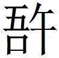
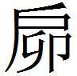

秦五
謂秦王
謂秦王〔一〕 曰：「臣竊惑王之輕齊易楚，而卑畜韓也。臣聞，王兵勝而不驕〔二〕 ，伯主約而不忿〔三〕 。勝而不驕，故能服世；約而不忿，故能從鄰〔四〕 。今王廣〔五〕 德魏、趙，而輕失齊，驕也；戰勝宜陽，不恤楚交，忿也〔六〕 。驕忿非伯主〔七〕 之業也。〔八〕 臣竊為大王慮之而不取也。
〔一〕 姚本 秦始皇也。
〔二〕 姚本 驕，驕慢。
〔三〕 姚本 忿，怨也。伯主約儉勞謙，故不有所忿怨。鮑本 主天下之要約。正曰：斂約也。
〔四〕 姚本 王者德大不驕逸，故能服鄰國（一本作「服世從鄰」）。服，慊也。鮑本 使鄰國服從。
〔五〕 姚本 曾一作「得」。劉一作「失」。鮑本 大施恩惠。
〔六〕 姚本 恤，顧。鮑本 言不以交楚為意。
〔七〕 鮑本 「主」作「王」。
〔八〕 姚本 業，事。
「詩 云：『靡不有初，鮮克有終〔一〕 。』故先王之所重者，唯始與終〔二〕 。何以知其然？昔智伯瑤殘范、中行，圍逼晉陽，卒為三家笑〔三〕 ；吳王夫差棲越於會稽〔四〕 ，勝齊於艾陵〔五〕 ，為黃池〔六〕 之遇，無禮於宋〔七〕 ，遂與〔八〕 勾踐禽，死於干隧；〔九〕 梁君伐楚勝齊，制趙、韓〔一〇〕 之兵，驅十二諸侯以朝天子於孟津〔一一〕 ，後子〔一二〕 死，身布冠〔一三〕 而拘於秦〔一四〕 。三者非無功也，能始而不能終也〔一五〕 。
〔一〕 鮑本 大雅·蕩 詩。
〔二〕 姚本 先王，聖王也。敬始慎終，故曰「唯始與終」也。鮑本 「始」、「終」互易，「然」下有「也」字。補曰：一本「唯始與終，何以知其然。」
〔三〕 姚本 智伯，智襄子也。殘，滅也。范，范吉射，昭子也。中行，中行寅，文子也。二子之後，以苛為察，以剋下為功，於晉六卿中，薄德前衰。智伯滅而兼之，志意驕盛，求地於趙襄子，襄子不與，故率韓圍晉陽，以伐趙氏。趙氏與韓、魏通謀，韓、魏為反間，令趙氏囗得殺智伯，故曰「三家笑」也。鮑本 無「逼」字。范吉射、中行寅，晉兩卿。趙、魏、韓三家也。事見韓策 。晉出公十七年。晉陽屬太原，故許唐國。補曰：大事記 ，晉陽，漢太原郡所治，龍山在西北，晉水所出。北齊分晉陽，置龍山縣，隋改龍山曰晉陽，而以晉陽為太原縣。正曰：大事記 ，晉出公十七年，晉荀瑤與趙、韓、魏氏分范、中行之地，反攻，出公奔齊，道死。晉哀公四年，趙約韓、魏攻荀瑤，滅之。
〔四〕 鮑本 故越國，揚州郡，亦山名。事見哀元年。
〔五〕 鮑本 杜注，齊地。哀十一年。補曰：正義 云，艾山在兗州博縣南。
〔六〕 鮑本 陳留外黃注，縣有黃溝。又魏內黃注，吳會諸侯于黃池。今黃溝是。哀十三年。正曰：哀十三年杜注，陳留封丘縣南有黃亭，近濟水。按，外黃、小黃、封丘皆屬陳留。外黃有黃溝，故指為黃池；而內黃隸相者，亦有黃溝。水經注 所謂河水決通濮、濟、黃溝者也。相與封丘殊遠，當以杜注為正。路史 同杜注。
〔七〕 鮑本 並哀十三年。吳欲伐宋，殺其大夫，囚其婦人。
〔八〕 鮑本 「與」作「為」。補曰：當作「為」。
〔九〕 姚本 「隧」，一作「隊」。吳王夫差伐越，勝之。勾踐奔走，棲於會稽山之上。遂北伐齊，勝長求平。勾踐起兵伐其國，遽救之，越人殺之干隧。干隧，邑名。鮑本 無「於干隧」三字。補曰：一本「死于干遂」。勾踐禽死，二十二年。
〔一〇〕 鮑本 「趙韓」作「韓趙」。
〔一一〕 姚本 梁君，梁惠王也。伐楚、齊，勝之，制御趙、韓之兵，驅使十二諸侯魯、衛、曹、宋、鄭、陳、許之君，朝天子于孟津。鮑本 在河內河陽縣南。魏記 ，惠王二年，敗韓于馬陵，敗趙于懷。十五年，魯、衛、宋、鄭君來朝。二十八年，中山君為相。不見齊、楚及朝天子事。正曰：年表 ，二十九年。
〔一二〕 鮑本 太子申也。三十年齊敗魏馬陵，虜申。
〔一三〕 鮑本 以喪禮自居也。
〔一四〕 姚本 後東伐齊，敗于馬陵，太子見殺，故「布冠」而拘執于秦也。鮑本 拘，猶制。
〔一五〕 姚本 終，終難也。
「今王破宜陽，殘三川〔一〕 ，而使天下之士不敢言〔二〕 ；雍〔三〕 天下之國，徙兩周之疆〔四〕 ，而世主不敢交〔五〕 陽侯之塞〔六〕 ；取黃棘〔七〕 ，而韓、楚之兵不敢進。王若能為此尾〔八〕 ，則三王不足四，五伯不足六〔九〕 。王若不能為此尾，而有後患，〔一〇〕 則臣恐諸侯之君，河、濟〔一一〕 之士，以王為吳、智之事也〔一二〕 。
〔一〕 姚本 初秦昭王滅東、西周，置宜陽及三川郡，故曰「破宜陽，殘三川」也。
〔二〕 姚本 言，議。
〔三〕 姚本 雍，有也。鮑本 「雍」，「擁」同，言據有之。
〔四〕 姚本 兩周，東、西周也。杆宜陽界而東之，故曰「徒兩周之疆」也。鮑本 侵逼之。
〔五〕 姚本 世主，謂諸侯也。鮑本 「交」作「窺」。
〔六〕 姚本 諸侯懾怖畏秦，不敢交會。陽侯，諸侯（一下有「之」字）。塞，隘處也。鮑本 河東陽注，陽侯國。
〔七〕 鮑本 秦紀 、楚記 ，懷王與昭王盟于黃棘，皆不地。正曰：正義 云，蓋在房、襄二州。
〔八〕 姚本 尾，後也。鮑本 言善其後。正曰：尾，終也。即上文能終之說。
〔九〕 姚本 言王為策討之，始得之矣。如能終卒沒，則王伯之道立也。故曰「三王不足四，五伯不足六」。
〔一〇〕 姚本 有滅亡之患也。
〔一一〕 鮑本 濟水在溫西北，此言中國爾。正曰：濟水出絳州垣曲縣王屋山，伏流至孟州濟源縣，出二源，合流，至溫縣入河，出河南溢而為滎，自鄭以東貫滑、曹、鄆、濟、齊、青入于海。
〔一二〕 姚本 吳，吳王夫差。智，智伯也。事，滅亡之事。
「詩 云：『行百里者半於九十。』此言末路之難〔一〕 。今大王皆有驕色，以臣之心觀之，天下之事，依〔二〕 世主之心〔三〕 ，非楚受兵，必秦也〔四〕 。何以知其然也？秦人援魏以拒楚，楚人援韓以拒秦〔五〕 ，四國之兵敵〔六〕 ，而未能復戰也〔七〕 。齊、宋在繩墨之外以為權〔八〕 ，故曰先得齊、宋者伐秦〔九〕 。秦先得齊、宋，則韓氏鑠〔一〇〕 ；韓氏鑠，則楚孤而受兵也〔一一〕 。楚先得齊〔一二〕 ，則魏氏鑠；魏氏鑠，則秦孤而受兵矣〔一三〕 。若隨此計而行之，則兩國〔一四〕 者必為天下笑矣。」〔一五〕
〔一〕 姚本 逸詩 言之。百里者，已行九十里，適為行百里之半耳。譬若強弩至牙上，甫為上弩之半耳。終之尤難，故曰「末路之難」也。
〔二〕 鮑本 依，猶據。
〔三〕 姚本 心，驕約之心也。
〔四〕 姚本 言不伐楚，則伐秦也。秦、楚之驕侈故也。鮑本 皆驕強故。
〔五〕 姚本 援，助。鮑本 「秦」下有「王」字。
〔六〕 鮑本 秦、楚、韓、魏也。韓、魏雖弱，以得援，故與之敵。
〔七〕 姚本 敵，強弱等也。未，無也。鮑本 敵，故不敢輕戰。
〔八〕 姚本 權，援助之勢也。鮑本 外，言四國不以為意。權，言能輕重四國。
〔九〕 鮑本 此言魏、韓得之。正曰：下文楚先得齊可見。
〔一〇〕 姚本 鑠，消鑠也。言其弱。鮑本 以銷金喻。
〔一一〕 姚本 韓弱而楚失援，故孤而受兵。
〔一二〕 鮑本 「齊」作「之」。
〔一三〕 姚本 魏為秦與國。魏弱，故秦失援而孤，受諸侯兵也。
〔一四〕 姚本 兩國，秦、楚也。
〔一五〕 鮑本 彪謂：此策 ，孟軻之徒也，惜其不名。正曰：孟子 曰，仲尼之徒，無道桓、文之事者，五伯者三王之罪人。今策云伯王之業，五伯不足六，孟子 而有是言歟？驕者必敗，亦論之常。其言先得齊、宋與失之，揣量事勢，計較強弱，不過以力服人而已！豈可與孟子 同日語哉？補曰：「為大」之「為」去聲。
秦王與中期爭論
秦王與中期〔一〕 爭論，不勝。秦王大怒，中期徐行而去。或為〔二〕 中期說秦王曰：「悍人〔三〕 也。中期適遇明君故也，向者遇桀、紂，必殺之矣〔四〕 。」秦王因不罪〔五〕 。
〔一〕 姚本 中期，秦辨士也。
〔二〕 鮑本 「為」作「與」。
〔三〕 鮑本 悍，勇也。勇者多迕。補曰：當曰「中期悍人也」，有錯文。札记 丕烈案：中期下屬為句，吳說未是。
〔四〕 姚本 有人為中期說，言遭遇明君，不罪勝己臣，故不見誅也。若其遇桀、紂，則必（一下有「誅」字）殺也。
〔五〕 姚本 言桀殺逄蒙，紂殺比干，惡其勝己也。秦王恥襲桀、紂之闕，故不罪。
獻則謂公孫消
獻則〔一〕 謂公孫消〔二〕 曰：「公，大臣之尊者也，數伐有功〔三〕 。所以不為相者，太后〔四〕 不善公也〔五〕 。辛戎〔六〕 者，太后之所親也〔七〕 。今亡於楚，在東周〔八〕 。公何不以秦、楚之重，資而相之於周乎〔九〕 ？楚必便之矣〔一〇〕 。是辛戎有秦、楚之重，太后必悅公，公相必矣〔一一〕 。」
〔一〕 鮑本 楚人，為羋戎游說者。
〔二〕 姚本 皆公孫消。鮑本 秦人。
〔三〕 姚本 公，謂公孫消也。尊，重也。數行戰伐有功勞也。鮑本 伐，戰伐。
〔四〕 鮑本 宣太后。
〔五〕 姚本 不為秦相者，不為羋太后不善者也。
〔六〕 姚本 辛戎，楚人，自楚亡在東周。鮑本 「辛」作「羋」。補曰：當作「羋」，下同。札记 丕烈案：此形近之訛。韓策 ，「謂羋戎曰，廢公叔」，不誤。
〔七〕 姚本 太后，楚女，孝文皇后，莊襄王母也，號華陽夫人者也。鮑本 穰侯傳 ，后同父弟羋戎為華陽君。凡羋皆楚人。
〔八〕 姚本 東周，洛陽成周也。
〔九〕 姚本 使辛戎為周相也。
〔一〇〕 鮑本 戎雖以罪去楚，楚既與秦共資之，必為楚用，故楚利之。
〔一一〕 姚本 言必見用為秦相也。
樓

約秦魏〔校一〕〔校一〕 此篇鮑本列在『魏策』。
樓 〔一〕 約秦、魏，魏太子為質〔二〕 ，紛彊欲敗之〔三〕 。謂太后曰：「國與還者也〔四〕 ，敗秦而利魏，魏必負之〔五〕 ，負秦之日，太子為糞矣〔六〕 。」太后坐王而泣〔七〕 。王因疑於太子〔八〕 ，令之留〔九〕 於酸棗。樓子患之。昭衍為周之梁，樓子告之〔一〇〕 。昭衍見梁王，梁王曰：「何聞？」曰：「聞秦且伐魏〔一一〕 。」王曰：「為期〔一二〕 與我約矣〔一三〕 。」曰：「秦疑於王之約，以太子之留酸棗而不之秦。秦王〔一四〕 之計曰：『魏不與我約，必攻我；我與其處而待之見攻，不如先伐之。』以秦彊折節而下與國〔一五〕 ，臣恐其害於東周〔一六〕 。」
〔一〕 姚本續 ： ，管子·七臣七主篇 云，「事無常而法令申，不 則國失勢」。注，「 」，古「伍」字，謂偶合也。言雖申布法令，於事不合。他字書無之。鮑本 「 」作「牾」。魏人。後又作「梧」。補曰：一本作「啎」，姚同。愚按，玉篇 無「啎」字，有「牾」字，五故反，觸也，逆也。策 後作「梧」。韻書，牾、忤；梧、午。荀子 ，「午其軍蘁」。莊子 ，「悟」。燕策 ，「韓于迕」。前漢，走逜、牾、捂、梧、枝梧，凡十一字，典籍往往通借，上、去聲。札记 丕烈案：此「啎」，「梧」同字，吳補詳之矣。
〔二〕 姚本 質于秦也。鮑本 此十一年朝秦。正曰：世家 ，襄王十二年，太子朝于秦，秦來拔我皮氏，未拔而解。此策 云太子為質，既而留於酸棗，昭衍說後，不云復遣，當缺。
〔三〕 姚本 紛彊，魏臣也。敗，害也。
〔四〕 姚本 還，周旋於利也。鮑本 還，猶反也。兩國相與好惡，循環不定。
〔五〕 姚本 負，昔也。鮑本 負，言魏得利而強，將不事秦，所謂還反。
〔六〕 鮑本 即所謂糞之。正曰：糞，棄除也。
〔七〕 鮑本 使王坐而泣於前。札记 今本「王而」誤「而王」。
〔八〕 姚本 疑，不欲令太子質秦。鮑本 不決遣。
〔九〕 姚本 留，止。
〔一〇〕 姚本 告昭衍魏太子止酸棗意。
〔一一〕 姚本 梁，魏都也。故將伐魏。
〔一二〕 姚本 「期」，曾作「其」。
〔一三〕 鮑本 言期以太子結約而不遣，為此故伐邪？正曰：言與我結約矣，何為而伐？
〔一四〕 鮑本 昭。正曰：無考。
〔一五〕 鮑本 與與國共伐魏。
〔一六〕 姚本 昭衍不欲正言害魏也，故詭言恐害東周也。秦來伐，必徑東周故也。鮑本 不欲正言魏受伐。魏與周鄰，言周，則魏可知。元在秦策 。正曰：交載秦、魏事，從舊可。補曰：「為周」之「為」，去聲。
濮陽人呂不韋賈於邯鄲
濮陽〔一〕 人呂不韋賈於邯鄲，見秦質子異人〔二〕 ，歸而謂父〔三〕 曰：「耕田之利幾倍？」曰：「十倍。」「珠玉之贏〔四〕 幾倍？」曰：「百倍。」「立國家之主贏幾倍？」曰：「無數〔五〕 。」曰：「今力田疾作，不得煖衣餘〔六〕 食；今建國立君，澤可以遺世〔七〕 。願往事之〔八〕 。」
〔一〕 鮑本 屬東郡。
〔二〕 姚本 異人，秦莊襄王之孫，孝文之子，昭王時質於趙，時不韋賈邯鄲而見也。鮑本 子楚初名，孝文王子。
〔三〕 姚本 曾本有「母」。
〔四〕 姚本 贏，利。
〔五〕 姚本 多不可數也。
〔六〕 姚本 餘，饒。
〔七〕 姚本 世，後世也。鮑本 遺，猶貽。世，後世。
〔八〕 鮑本 事，猶為。補曰：不韋鄙耕田珠玉之小贏，而圖建國立君之大利，自以為計得矣！徙蜀飲酖之時，能無悔乎？
秦子異人質於趙，處於

城〔一〕 。故往說之曰：「子傒〔二〕 有承國之業，又有母在中〔三〕 。今子無母於中，外託於不可知之國〔四〕 ，一日倍約，身為糞土〔五〕 。今子聽吾計事〔六〕 ，求歸，可以有秦國。吾為子使秦，必來請子〔七〕 。」〔一〕 姚本 城，趙邑。鮑本 趙地，缺。補曰：字書無「 」字。龍龕手鑑 云，音腳。札记 丕烈案：史記·呂不韋傳·正義 引此作「聊」。
〔二〕 姚本 子傒，秦太子也，異人之異母兄弟。鮑本 異人異母兄。札记 今本「傒」誤「徯」。
〔三〕 姚本 中，猶內也。鮑本 異人母曰夏姬，無寵，如無母然。
〔四〕 姚本 謂秦託子於趙，安危吉凶不可知也。鮑本 史 言趙不禮之，故禍福未可知也。
〔五〕 鮑本 棄死且賤也。
〔六〕 姚本 事，治。鮑本 以求歸為事。正曰：劉辰翁云，計事，猶謀事。求歸，別句。
〔七〕 姚本 子，異人也。言必使秦來請子於趙。
乃說秦王后〔一〕 弟陽泉君曰：「君之罪至死，君知之乎〔二〕 ？君之門下無不居高尊位，太子〔三〕 門下無貴者。君之府藏珍珠寶玉，君之駿馬盈外廄，美女充後庭。王之春秋 高〔四〕 ，一日山陵崩，太子用事〔五〕 ，君危於累卵，而不壽於朝生〔六〕 。說有可以一切〔七〕 而使君富貴千萬歲，其〔八〕 寧於太山四維〔九〕 ，必無危亡之患矣〔一〇〕 。」陽泉君避席〔一一〕 ，請聞其說。不韋曰：「王年高矣，王后無子，子傒有承國之業，士倉又輔〔一二〕 之。王一日山陵崩，子傒立，士倉用事，王后之門，必生蓬蒿。子〔一三〕 異人賢材也，棄在於趙，無母於內，引領西望，而願一得歸。王后〔一四〕 誠請而立之，是子異人無國而有國，王后無子而有子也。」陽泉君曰：「然。」入說王后，王后乃請趙而歸之。
〔一〕 姚本 秦王后，孝文皇帝華陽夫人也，時昭王時也，或言后耳。
〔二〕 姚本 不韋云，君有不遠圖之罪，知不？
〔三〕 姚本 太子，子傒。
〔四〕 姚本 言昭王年老也。鮑本 春秋 ，舉成歲。此言其年高。
〔五〕 姚本 一日，猶一旦也。山陵，喻尊高也。崩，死也。用事，即位治國事。鮑本 山陵，喻高且固。崩，喻死。
〔六〕 姚本 君，謂陽泉君也。累卵，至危也。朝生，木堇也，朝榮夕落。真為短命不壽也，命將不至終日也。鮑本 木槿也，朝榮夕死。令又不如。
〔七〕 鮑本 權宜也。
〔八〕 鮑本 衍「其」字。
〔九〕 姚本 四維，持之也。鮑本 四方之隅，不可移也。正曰：以太山為四維。
〔一〇〕 姚本 患，憂。
〔一一〕 鮑本 離席前請。
〔一二〕 姚本 輔，猶助也。
〔一三〕 姚本 子，異人名。
〔一四〕 姚本 王后，華陽夫人耳。札记 今本「西」誤「四」。
趙未之遣，不韋說趙曰：「子異人，秦之寵子也，無母於中，王后欲取而子之〔一〕 。使秦而欲屠趙，不顧一子以留計〔二〕 ，是抱空質也〔三〕 。若使子異人歸而得立，趙厚送遣之，是不敢倍德〔四〕 畔施，是自為德講〔五〕 。秦王老矣，一日晏駕〔六〕 ，雖有子異人，不足以結〔七〕 秦。」趙乃遣之〔八〕 。
〔一〕 姚本 欲為己子。
〔二〕 鮑本 留，不決也。
〔三〕 姚本 抱，持。鮑本 此質本以交好，今不能然，故曰「空」。
〔四〕 姚本 德，恩。
〔五〕 姚本 講，誠。曾本作「誠講」。鮑本 必以恩德講好于趙。正曰：講，即「媾」字。
〔六〕 姚本 晏，晚也。日暮而駕歸大陰也，謂死亡也。鮑本 天文志 ，天子當早作，而方崩隕，臣子之心猶謂宮車晚出。
〔七〕 姚本 結，固。
〔八〕 鮑本 不韋傳 ，秦圍邯鄲，趙欲殺子楚，子楚脫亡歸，與此駁。札记 丕烈案：此策 文與史記 多不同，詳在小司馬索隱 也。
異人至，不韋使楚服〔一〕 而見。王后悅其狀〔二〕 ，高其知，〔三〕 曰：「吾楚人也。」而自子之〔四〕 ，乃變其名曰楚。王使子誦〔五〕 ，子曰：「少棄捐在外，嘗無師傅所教學，不習〔六〕 於誦。」王罷之，乃留止〔七〕 。間〔八〕 曰：「陛下嘗軔車於趙矣〔九〕 ，趙之豪桀，得知名者不少〔一〇〕 。今大王反國，皆西面〔一一〕 而望。大王無一介之使以存〔一二〕 之，臣恐其皆有怨心。使邊境早閉晚開〔一三〕 。」王以為然，奇其計。王后勸立之。王乃召相，令之曰：「寡人子莫若楚。」立以為太子。
〔一〕 姚本 楚服，盛服。鮑本 以王后楚人，故服楚製以說之。
〔二〕 姚本 狀，兒。
〔三〕 姚本 高，大。
〔四〕 姚本 夫人，楚女也，故曰「吾楚人」。而自子之，以異人為己子。
〔五〕 姚本 誦經。鮑本 誦所習書。
〔六〕 姚本 習，曉。鮑本 補曰：大事記 ，不習於誦，此焚書之兆也。愚按，昭王問荀卿，儒無益於人之國，其來久矣。
〔七〕 姚本 止，曾作「請」。鮑本 止宮中。
〔八〕 姚本 間，須臾也。鮑本 間政事之隙。
〔九〕 姚本 陛下，謂孝文王也。昔嘗質趙。軔車，止仕也。不欲言其質，故住車，故止於趙敢國。鮑本 高紀 五年注「陛者」云云。軔，碾車木。
〔一〇〕 鮑本 以名見知於王。
〔一一〕 姚本 面，向。
〔一二〕 姚本 存，勞問也。鮑本 昭二十八年注，一介，單使也。存，問也，問其存亡。
〔一三〕 鮑本 有警則然。
子楚立〔一〕 ，以不韋為相，號曰文信侯，食藍田十二縣〔二〕 。王后為華陽太后，諸侯皆致秦邑〔三〕 。
〔一〕 鮑本 是為莊襄王。
〔二〕 姚本 官祿。
〔三〕 鮑本 致邑，為太后養地也。按，此是子楚以孝文王立後，不韋說使歸之。不韋傳 則言孝文為安國君時歸，與此駁。彪謂：不韋，賈人也，彼安能知義？欲圖贏而奪嫡立庶，秦國之不亂敗者幸也！以是得贏，而飲酖於蜀，於是知有天道矣！凡不韋所立，於時皆喪身滅國之事。周衰，士之陰險傾邪，無輩於不韋者。不足筭也，不足筭也！子楚之計平平耳，孝文稱為奇而立之，非老悖乎？
文信侯欲攻趙以廣河間
文信侯欲攻趙以廣河間，使剛成君蔡澤事燕三年，而燕太子〔一〕 質於秦。文信侯因請張唐〔二〕 相燕〔三〕 ，欲與燕共伐趙，以廣河間之地〔四〕 。張唐辭曰：「燕者必徑〔五〕 於趙，趙人得唐者，受百里之地。」文信侯去而不快〔六〕 。少庶子甘羅〔七〕 曰：「君侯何不快甚也？」文信侯曰：「吾令剛成君蔡澤事燕三年，而燕太子已入質矣。今吾自請張卿〔八〕 相燕，而不肯行。」甘羅曰：「臣行之〔九〕 。」文信君叱去〔一〇〕 曰：「我自行之而不肯，汝安能行之也？」甘羅曰：「夫項櫜〔一一〕 生七歲而為孔子師，今臣生十二歲於茲矣！君其試臣，奚以遽言叱也〔一二〕 ？」
〔一〕 姚本 太子，燕僖王之子子丹也。
〔二〕 鮑本 秦人。
〔三〕 姚本 曾作「往相燕」。
〔四〕 鮑本 無「欲與燕共伐趙以廣河間之地」十二字。札记 丕烈案：無者是也。策 文在首，史記 取之而移於此。有者，乃依史記 添入而誤複耳。
〔五〕 鮑本 徑者，道所出也。
〔六〕 姚本 快，樂。
〔七〕 姚本 少庶子，官名。甘羅，文相家臣也。鮑本 禮 ，庶子，掌諸侯卿大夫之庶子。羅，茂之孫。正曰：索隱 引策 甘羅事呂不韋為庶子，即指此也。注以周制言秦官，誤。庶子說，又見後。
〔八〕 姚本 張卿，即唐。
〔九〕 姚本 一本「臣」下有「請」字。
〔一〇〕 姚本 曾作「曰去」，劉作「去曰」。鮑本 「君」作「侯」。正曰：以羅所事言，故稱君。札记 丕烈案：史記 作「文信侯叱曰去」。
〔一一〕 姚本續 ：史記 作大項橐，司馬貞音「託」。尊其道德，故曰「大」。鮑本 「櫜」作「橐」。列子 有問日出者，豈其人乎？正曰：無稽。札记 丕烈案：「橐」字是也。史記 作「橐」。
〔一二〕 姚本 奚，何。叱，呵。
甘羅見張唐曰：「卿之功，孰與武安君〔一〕 ？」唐曰：「武安君戰勝攻取，不知其數；攻城墮邑，不知其數〔二〕 。臣之功不如武安君也。」甘羅曰：「卿明知功之不如武安君歟？」曰：「知之。」「應侯之用秦也〔三〕 ，孰與文信侯專〔四〕 ？」曰：「應侯不如文信侯專。」曰：「卿明知為不如文信侯專歟？」曰：「知之。」甘羅曰：「應侯欲伐趙，武安君難之，去咸陽七里，絞而殺之〔五〕 。今文信侯自請卿相燕，而卿不肯行，臣不知卿所死之處矣〔六〕 ！」唐曰：「請因孺子而行〔七〕 ！」令庫具車，廄具馬，府具幣〔八〕 ，行有日矣。甘羅謂文信侯曰：「借臣車五乘，請為張唐先報〔九〕 趙。」
〔一〕 姚本 武安君，秦將白起。
〔二〕 姚本 言眾多不可數知也。
〔三〕 鮑本 見用于秦。
〔四〕 姚本 專，權重也。
〔五〕 姚本 難應侯，二萬眾還歸於郿陽（曾作「二萬眾解於郿陽」），賜死于杜郵也。鮑本 起傳 言賜劍。
〔六〕 姚本 言白起死于杜郵，但未知卿死何處（「處」一作「所」）。
〔七〕 姚本 請，聽也。言行（「行」一作「因」）之燕也。鮑本 因之請於文信。離婁 注，孺子，童子。
〔八〕 姚本 幣，貨財也。
〔九〕 姚本 報口也，往為張唐先說趙王也。
見趙王〔一〕 ，趙王郊迎。謂趙王曰：「聞燕太子丹之入秦與？」曰：「聞之。」「聞張唐之相燕與？」曰：「聞之。」「燕太子入秦者，燕不欺秦也。張唐相燕者，秦不欺燕也。秦、燕不相欺，則伐趙，危矣。燕、秦所以不相欺者，無異故〔二〕 ，欲攻趙而廣河間也。今王齎臣五城以廣河間，請歸燕太子，與強趙攻弱燕。」趙王立割五城以廣河間，歸燕太子。趙〔三〕 攻燕，得上谷〔四〕 三十六縣，與秦什一〔五〕 。
〔一〕 鮑本 悼襄。
〔二〕 姚本 異，怪。
〔三〕 鮑本 「趙」上補「與」字。札记 丕烈案：史記 無，鮑補誤。
〔四〕 鮑本 幽州郡。
〔五〕 姚本續 ：史記 ，得上谷三十城，令秦有十一。後語 ，三十餘城，令秦有其十二。鮑本 以十之一與秦也，羅傳 有。補曰：史 云，得上谷二十城，令秦有十一。索隱 云，謂以十一城予秦也。二說未知孰是？
文信侯出走〔校一〕
〔校一〕 此篇鮑本列在『趙策』。
文信侯出走〔一〕 ，與司空馬〔二〕 之趙，趙以為守相〔三〕 。秦下甲而攻趙〔四〕 。
〔一〕 鮑本 始皇十年免相就國，十二年徙蜀，飲酖死。
〔二〕 鮑本 不韋吏也。補曰：「與」字疑衍。札记 吳氏補曰「與」字疑衍，是也。
〔三〕 姚本 守相，假也。鮑本 守，假官也，馬為之。
〔四〕 姚本 甲，兵。
司空馬說趙王曰：「文信侯相秦，臣事之，為尚書〔一〕 ，習秦事。今大王使守〔二〕 小官，習趙事。請為大王設秦、趙之戰〔三〕 ，而親觀其孰勝。趙孰與秦大？」曰：「不如。」「民孰與之眾？」曰：「不如。」「金錢粟孰與之富？」曰：「弗如。」「國孰與之治？」曰：「不如。」「相孰與之賢？」曰：「不如。」「將孰與之武？」曰：「不如。」「律令孰與之明？」曰：「不如。」司空馬曰：「然則大王之國，百舉而無及秦者，大王之國亡。」趙王曰：「卿不遠趙，而悉教〔四〕 以國事，願於因計〔五〕 。」司空馬曰：「大王裂趙之半以賂秦，秦不接刃而得趙之半，秦必悅。內惡趙之守〔六〕 ，外恐諸侯之救，秦必受之〔七〕 。秦受地而郄〔八〕 兵，趙守半國以自存。秦銜賂以自強，山東必恐；亡趙自危〔九〕 ，諸侯必懼。懼而相救，則從事可成〔一〇〕 。臣請大王約〔一一〕 從。從事成，則是大王名亡趙之半，實得山東以敵秦，秦不足亡〔一二〕 。」趙王曰：「前日秦下甲攻趙，趙賂以河間十二縣，地削兵弱，卒不免秦患。今又割趙之半以強秦，力不能自存，因以亡矣。願卿之更計〔一三〕 。」司空馬曰：「臣少為秦刀筆〔一四〕 ，以官長而守小官〔一五〕 ，未嘗為兵〔一六〕 首〔一七〕 ，請為大王悉趙兵以遇〔一八〕 。」趙王不能將〔一九〕 。司空馬曰：「臣效愚計，大王不用，是臣無以事大王，願自請〔二〇〕 。」
〔一〕 鮑本 秦官，屬少府。
〔二〕 姚本 「守」，一作「臣」。
〔三〕 鮑本 設者，無其事，施陳為之。
〔四〕 鮑本 「悉」作「惠」。札记 今本「教」誤「敵」。
〔五〕 姚本 因，猶受也。鮑本 因，非正為之，猶秦王謂陳軫「以其餘為寡人計」也。
〔六〕 鮑本 秦雖說於得地，趙猶有守之者，秦所患也。
〔七〕 姚本 「之」，一作「地」。鮑本 患於有守有救，則其受之，不得不急。
〔八〕 姚本 「郄」，一作「卻」。鮑本 「郄」作「卻」。補曰：此書「郤」，通。姚本作「郄」，同。
〔九〕 姚本 亡，失。鮑本 趙亡，則五國有唇亡之憂。
〔一〇〕 姚本 山東六國相親從，（一上有「則」字）事可成。鮑本 「可」作「有」。
〔一一〕 姚本 約，結。鮑本 「請」下有「為」字。
〔一二〕 姚本 言輕之也（一「言」上有「不足」二字）。
〔一三〕 鮑本 「卿」下無「之」字。更，猶易。補曰：王之言是，馬之計非。「更」，如字可。
〔一四〕 姚本 一本作「奉筆」。鮑本 謂為尚書也。筆以書札；刀，削其不當者。
〔一五〕 鮑本 「官」作「吏」。其官之長任之屬吏。
〔一六〕 鮑本 為，猶治也。馬謙言。
〔一七〕 鮑本 「首」作「百」，又改為「臣」。補曰：姚本 作「首」，當屬上文。札记 吳氏補曰「當屬上文」，是也。
〔一八〕 姚本 遇秦敵也。鮑本 與秦接戰。
〔一九〕 姚本 趙不（一本「趙」下有「王」字）能用司馬（一作司空馬）為將。鮑本 不用馬為將。
〔二〇〕 姚本 自請而去。鮑本 猶乞骸骨。
司空馬去趙，渡平原。平原津令〔一〕 郭遺勞而問：「秦兵下趙，上客〔二〕 從趙來，趙事何如？」司空馬言其為趙王計而弗用〔三〕 ，趙必亡。平原令曰：「以上客料〔四〕 之，趙何時亡？」司空馬曰：「趙將武安君，期年而亡〔五〕 ；若殺武安君，不過半年。趙王之臣有韓倉者，以曲〔六〕 合於趙王，其交甚親，其為人疾賢妒功臣。今國危亡，王必用其言，武安君必死〔七〕 。」
〔一〕 鮑本 列女傳 有趙津吏，蓋此官也。
〔二〕 姚本 上客，尊客。
〔三〕 鮑本 「弗」作「勿」，又改為「不」。補曰：一本作「弗勝」。
〔四〕 姚本 料，數。
〔五〕 姚本 武安君，李牧也。趙若用之為將，可期而亡。
〔六〕 姚本 曲，邪。鮑本 曲，不正也。
〔七〕 姚本 韓倉必讒殺武安君也。
韓倉果惡之〔一〕 ，王使人代〔二〕 。武安君至，使韓倉數之〔三〕 曰：「將軍戰勝，王觴將軍〔四〕 。將軍為壽於前〔五〕 而捍匕首〔六〕 ，當死。」武安君曰：「繓〔七〕 病鉤〔八〕 ，身大臂短，不能及地，起居不敬〔九〕 ，恐懼死罪於前〔一〇〕 ，故使工人為木材以接手〔一一〕 。上若不信，繓請以出示。」出之袖中，以示韓倉，狀如振梱〔一二〕 ，纏之以布。「願公入明之。」韓倉曰：「受命於王，賜將軍死，不赦。臣不敢言〔一三〕 。」武安君北面再拜賜死〔一四〕 ，縮劍將自誅〔一五〕 ，乃曰：「人臣不得自殺宮中。」遇司空馬門〔一六〕 ，趣甚疾〔一七〕 ，出諔〔一八〕 門也。右舉劍將自誅〔一九〕 ，臂短不能及，銜劍徵之於柱以自刺〔二〇〕 。武安君死。五月趙亡〔二一〕 。
〔一〕 鮑本 惡牧。
〔二〕 姚本 人代武安君為將也。鮑本 「使」作「令」。使趙葱、顏聚代牧。
〔三〕 姚本 數，讓。鮑本 數列其罪。
〔四〕 姚本 觴，酒爵也。
〔五〕 鮑本 上趙王壽。
〔六〕 姚本 「捍」，劉一作「捭」。鮑本 匕首，刃名，蓋其首如匕。漢鹽鐵論 ，「荊軻懷數年之謀而事不就者，尺八匕首不足恃也」。捍，衛也。誣其以匕首自衛，如欲刺王然。補曰：姚本 注，捍，劉一作「捭」。按，李善注文選 引此。說文 ，捭，兩手擊也，希買反。匕，短劍也，補履反。捍，捍衛匕首也。札记 丕烈案：此謝靈運之郡初發都詩 注。李，希買反。「捭」字是也。作「捍」者，形近之訛耳。
〔七〕 姚本 繓，李牧名。鮑本 牧名。補曰：此因高注。繓，子活反。說文 ，結也。
〔八〕 鮑本 短傴如鉤。正曰：病鉤，即所謂臂短也。
〔九〕 鮑本 起居，問王起居也。不及地為不敬。
〔一〇〕 鮑本 不敬者其罪死，故以死懼。
〔一一〕 姚本 接，續。
〔一二〕 姚本 「捆」，曾作「棡」。鮑本 「捆」作「梱」。梱就也。蓋為木接手，可以就地，因以舉身也。集韻 ，梱，門橛也，又㮯柎也，與「楎」同，音袞，犁轅也。疑此木類此，故名。正曰：一本作「梱」。集韻 以「因」為「梱」。今鮑本作「梱」，而說乃作「梱」，恐刊本誤。「梱」乃木名，鮑先據「梱」字，以就地因舉身，為說迂曲；又以為「梱」，苦本反，門橛也，此字頗近而通。既又引「梱」「楎」為言，則汨矣。「楎」，呼歸反；「㮯」，自為胡本反也。蓋牧右臂短，故為木材接之，如振動梱橛也。匕首挾以刺人，牧為壽王前，不敢出，其振梱有若捍匕首，故以挾匕首罪。札记 丕烈案：吳說亦非也。此「㧢」字乃「捆」字形近之訛，讀當以「捆纏之以布」為句。「狀如振」，「振」，乃狀木材所如之物者，其字亦有訛，當闕。
〔一三〕 姚本 言不敢明將軍。
〔一四〕 鮑本 拜賜死之命。
〔一五〕 姚本 縮，取。鮑本 「縮」，當作「摍」。集韻 ，引也，抽也。
〔一六〕 姚本 劉，一作「過司馬門」。鮑本 「遇」作「過」，衍「空」字。門，宮門。
〔一七〕 鮑本 「趣」作「趨」。此言牧之知禮也。而史言牧不受命，捕得斬之。不知遷舍此何所聞而云乎？補曰：大事記 ，牧之恭如此，傳乃謂牧不受命，趙使人徵捕得斬之，非也。使不受命，韓倉安得不數之。豈非因廉頗不受代事而誤載乎？愚按，下章亦明。
〔一八〕 鮑本 「諔」作「䛂」，又改為「誃」。誃，別也。補曰：未詳。札记 今本「諔」作「誃」，乃誤涉鮑也。「諔」，鮑本作「䛂」，鮑改「䛂」為「誃」。吳氏補曰「未詳」，是也。
〔一九〕 姚本 「誅」，一作「殺」。
〔二〇〕 鮑本 徵，猶驗也。口銜劍，不自知其可死，即柱以為驗也。正曰：銜劍於口，因柱以自刺，驗其手之不能及也。
〔二一〕 姚本 亡，滅也。上所謂「不過半年」，秦將王翦破趙為郡也。鮑本 此七年誅牧，八年邯鄲為秦。補曰：終上文之旨。
平原令見諸公，必為言之曰〔一〕 ：「嗟嗞〔二〕 乎，司空馬！」又以為司空馬逐於秦，非不知也〔三〕 ；去趙，非不肖也。趙去司空馬而國亡〔四〕 。國亡者，非無賢人，不能用也。〔五〕
〔一〕 鮑本 「言之」作「之言」。補曰：一本「言之」。
〔二〕 姚本 劉，一無「嗞」。鮑本 嗞，亦嗟也。札记 今本「嗞」誤「茲」。
〔三〕 鮑本 「為」作「謂」，「知」作「智」。
〔四〕 鮑本 「國亡」作「亡國」。補曰：一本「而國亡」。
〔五〕 鮑本 彪謂：從橫之說，皆有所偏，而從人欲合六弱，以攻一強，其勢若可為也，患諸侯之不一耳！使諸侯而明於事變，不惑小利，不修小怨，并力合慮而西，雖不可以大有為，其於蹙秦有餘。惜乎當時不知此也！自蘇秦死，從終不堅，秦兵四出，諸侯挫於走北，其氣奪矣。司空馬欲以此時割趙之半說秦，而反其兵，因以復合天下之從，豈不謬哉！夫以全趙猶惴惴不自保，安能守半趙以自存乎？秦有并吞天下之心，雖得半趙，不盡不止，而何以說之？諸侯勢去，自春申不能從以難秦，司空馬獨能之乎？故趙幽之亡，罪在用韓倉而殺李牧，無與司空馬。平原令非篤論也。補曰：秦策 ，秦王資頓弱以金，北遊燕、趙，而殺李牧。史 稱，秦多與趙王寵臣郭開金，為反間，而殺牧。而廉頗傳 稱，頗之仇郭開與使者金，使毀頗。及張釋之傳 云，趙用李牧幾霸，會趙王遷立，其母倡也，遷用郭開讒，卒誅李牧。列女傳 云，趙悼后者，邯鄲倡女，前嫁，亂一宗族。既寡，悼襄王以其美而娶之，李牧諫云云，不聽。後生子遷，立為幽閔王。后通於春平君，多受秦賂，而使王誅其良將李牧。趙亡後，大夫怨倡后之譖太子喜殺李牧，乃殺倡后，滅其家。諸說皆可互考。但史 因廉頗不受代事而誤以為牧，恐郭開、韓倉亦有差互耳。三「請為」、「其為」、「必為」之「為」，去聲。
四國為一將以攻秦
四國〔一〕 為一，將以攻秦。秦王召群臣賓客六十人而問焉，曰：「四國為一，將以圖秦，寡人屈於內〔二〕 ，而百姓靡〔三〕 於外，為之奈何？」群臣莫對。姚賈〔四〕 對曰〔五〕 ：「賈願出使四國，必絕〔六〕 其謀，而安〔七〕 其兵。」乃資車百乘，金千斤，衣以其衣〔八〕 ，冠舞以其劍〔九〕 。姚賈辭行，絕其謀，止其兵，與之為交以報秦。秦王大悅。賈封〔一〇〕 千戶，以為上卿。
〔一〕 姚本 四國，燕、趙、吳、楚也。史記 無此篇。後引史記 注，別見。鮑本 荊、齊、燕、代，見下文。
〔二〕 姚本 屈，客。鮑本 財力困也。
〔三〕 姚本 靡，盡。
〔四〕 姚本 「姚」，劉、曾本皆作「桃」。鮑本 魏安。
〔五〕 姚本 姚賈，譏周公誅管、蔡不仁不知者，在孟子 之篇也。
〔六〕 姚本 絕，斷。
〔七〕 姚本 安，止。鮑本 「安」作「案」。。札记 正曰：息也。丕烈案：鮑改誤也，高注即其證也。
〔八〕 鮑本 以王衣衣之，寵之也。
〔九〕 姚本 「舞」，劉本作「帶」。鮑本 無「冠」字。古者飲則以劍舞，今以王劍賜之，使為舞時用。札记 丕烈案：齊策 有「冠舞其劍」，正同。
〔一〇〕 姚本 劉一作「封賈」。
韓非知之〔一〕 ，曰：「賈以珍珠重寶，南使荊、吳〔二〕 ，北使燕、代之間三年，四國之交未必合也，而珍珠重寶盡於內。是賈以王之權，國之寶〔三〕 ，外自交於諸侯，願王察之。且梁監門子〔四〕 ，嘗盜於梁，臣於趙而逐〔五〕 。取世監門子〔六〕 ，梁之大盜，趙之逐臣，與同知社稷之計，非所以厲群臣也〔七〕 。」
〔一〕 姚本 「知」，一作「短」。韓非，韓公子也，著刑名之書十餘萬言。是時在秦，故知之也（「知」一作「短」）。終死于譖姚賈也。續云：史記 注引戰國策 曰，姚賈，韓非短之。鮑本 韓之諸公子，秦王見其書，恨不及見之。攻韓，韓遣之使秦，秦王說之。賈與李斯毀之死。
〔二〕 鮑本 「吳」作「齊」。此章無吳事。此四國，後亡者也。三晉滅久矣。正曰：無考，當從舊。札记 丕烈案：韓詩外傳 云，昔吳、楚、燕、代為一，舉而欲伐秦。姚賈，監門之子也，為秦往使之。是策 文本如此。
〔三〕 鮑本 無「國之寶」三字。補曰：一本此下有「國之寶」三字。
〔四〕 鮑本 監門卒也。賈其子。
〔五〕 姚本 嘗盜竊於大梁，為趙臣而見逐者。
〔六〕 姚本 父死子繼，曰世。言世世監門卒子耳。
〔七〕 鮑本 厲，礪同，䃺也。
王召姚賈而問曰：「吾聞子以寡人財交於諸侯，有諸？」對曰：「有〔一〕 。」王曰：「有何面目復見寡人？」對曰：「曾參孝其親，天下願以為子；子胥忠於君，天下願以為臣；貞女工巧〔二〕 ，天下願以為妃〔三〕 。今賈忠王而王不知也。賈不歸四國，尚焉之？使賈不忠於君，四國之王尚焉用賈之身？桀聽讒而誅其良將〔四〕 ，紂聞〔五〕 讒而殺其忠臣〔六〕 ，至身死國亡〔七〕 。今王聽讒，則無忠臣矣。」
〔一〕 姚本 劉作「有之」。
〔二〕 鮑本 有婦功也。
〔三〕 鮑本 妃，匹也。補曰：妃，當音配。「曾參」止「之身」云云，即陳軫之說。
〔四〕 姚本 殺關龍逢也。
〔五〕 鮑本 「聞」作「聽」。
〔六〕 姚本 剖比干之心。
〔七〕 姚本 亡，失天下。
王曰：「子監門子，梁之大盜，趙之逐臣〔一〕 。」姚賈曰：「太公望，齊之逐夫〔二〕 ，朝歌之廢屠〔三〕 ，子良之逐臣〔四〕 ，棘津之讎不庸〔五〕 ，文王用之而王〔六〕 。管仲，其鄙人之賈人也〔七〕 ，南陽之弊幽，魯之免囚〔八〕 ，桓公用之而伯。百里奚，虞之乞人，傳賣以五羊之皮，穆公相之而朝西戎〔九〕 。文公用中山盜，而勝於城濮〔一〇〕 。此四士者，皆有詬醜〔一一〕 ，大誹天下，〔一二〕 明主用之，知其可與立功〔一三〕 。使若卞隨、務光、申屠狄，人主豈得其用哉〔一四〕 ！故明主不取其汙，不聽其非，察其為己用〔一五〕 。故可以存社稷者，雖有外誹者不聽；雖有高世之名，無咫〔一六〕 尺之功者不賞。是以群臣莫敢以虛願望於上〔一七〕 。」
〔一〕 姚本 言韓非譖。
〔二〕 姚本 太公呂尚望，為老婦之逐。鮑本 婦逐之也，不經見。
〔三〕 姚本 賣肉於朝歌，肉上生臭不售，故曰廢屠。鮑本 朝歌屬河內。賈肉不售，故曰「廢」。補曰：楚辭 ，「師望在肆昌何識，鼓刀揚聲后何喜」。集注 云，「呂望鼓刀在列肆，文王親往問之，望曰，『下屠屠牛，上屠屠國』。文王喜，載與俱歸」。此與獵渭濱而得之說不同，蓋當時好事者之言，猶伊尹、百里奚自鬻之比。惜乎孟子 時無問者，不得并掊擊之也。
〔四〕 姚本 子良不用，而斥逐也。鮑本 未聞。
〔五〕 姚本 釣魚於棘津，魚不食餌；賣庸作，又不能自售也。鮑本 後志 ，琅邪西海，太公所出，又釣于棘津，今存。讎，售同。蓋嘗求售與人為庸，不見用也。
〔六〕 姚本 王有天下也。
〔七〕 姚本 「賈人」，一無「人」字。為巿賣儈，求其小利於其鄙人。鄙人，邑名。鮑本 五酇為鄙，蓋酇鄙之人為賈者。仲嘗與鮑叔賈。補曰：「鄙」下「人」字疑衍。札记 丕烈案：吳說非也。高注即其證矣。
〔八〕 姚本 弊，隱也。幽，潛。不見升用，貧賤于南陽，故曰「南陽之弊幽」。於公子糾不死其難，為魯所束縛而歸齊，故曰「魯之免囚」也。鮑本 修武，南陽也。仲，穎上人，嘗以貧困隱此。敝，困。幽，隱也。見莊九年。
〔九〕 姚本 百里奚，虞臣。虞君不用，傳之門，自鬻於秦，號五羊大夫。於穆公，伯西方，戎來朝也。傳 曰，五羖用而秦霸。此之謂也。鮑本 奚，虞臣也，不見用，自鬻於秦養牲者，以五羖羊皮鬻之。補曰：說見上。說苑 ，鄒子說梁王曰，管仲故成陰之狗盜也，天下之庸夫也；太公望故老婦之出夫也，朝歌之屠佐也，棘津迎客之舍人也，云云。亦此類。
〔一〇〕 姚本 傳 曰，晉文公用咎犯之謀，破楚成王於城濮。此云中山之盜，則未聞也。鮑本 僖二十八年，晉文公用咎犯之謀，破楚成王于城濮，與此不同。杜注城濮及史 注，止云衛地。正曰：文公用中山盜而勝于城濮，與上句穆公相之而朝西戎，文意同。此但言用人不問其出於賤惡，而卒有如是之功耳。按，文公有寺人披斬祛、豎頭須竊藏二事。鄒陽書 ，「文公親其讎而強伯諸侯」，注以為寺人勃鞮。新序 ，文公用其盜，以為里鳧須，即豎頭須也。二事皆可通。
〔一一〕 姚本 詬，辱。醜，恥。
〔一二〕 姚本 曾作「於天下」。
〔一三〕 姚本 立，成功也。鮑本 「功」下有「也」字。
〔一四〕 姚本 卞隨、務光，湯時隱士。湯伐桀以天下讓之，二人曰，「爾為不義，欲以慢我也」，自沉於清冷之淵。申屠不忍見紂之無道，抱石自沉於澗水。故曰「人主豈得用哉」！鮑本卞隨、務光，並湯時人，辭湯之聘；申屠狄，紂時人，自沉于淵。並見莊子 。
〔一五〕 鮑本 汙者、非者，雖不取不聽，知其為用，則或聽取。察，言聽取之。
〔一六〕 鮑本 八尺曰咫。
〔一七〕 姚本 明主為明君，賞有功，不賞有高名虛空無功用於國者。不敢望賞於君者也。鮑本 無功而願賞，虛願也。補曰：魏無知之論陳平曰，今有尾生、孝己之行，而無益勝負之數，王何暇用之乎！即姚賈之說也。燕策 蘇秦、蘇代之說，亦此類。
秦王曰：「然。」乃可〔一〕 復使姚賈而誅〔二〕 韓非。〔三〕
〔一〕 姚本 劉無「可」字。鮑本 衍「可」字。補曰：一本無。
〔二〕 姚本 誅，殺也。賞功不賞名者也（一無「者也」二字）。
〔三〕 鮑本 高誘，妄人也。註此書，謬妄非一處。如此策 以姚賈為陳賈，齊策 以伐燕為齊宣王，初不考其歲月。賈乃與李斯同時，安得見於孟子 之書？宣、閔皆嘗伐燕，而之、噲之役，實閔王也。誘之率意如此，愚天下後世甚矣。彪之校注，蓋為此發憤，故其所稱皆必有依據，懼獲罪於後人也。正曰：鮑注是書，謂高氏以姚賈為孟子 書陳賈，以伐燕為齊宣王，為是憤發，凡策 之書宣者，悉據史記 改從閔，大詆高氏，而以此為稱首。夫學者考訂於千載之上，義理事徵而已。歲月名字之差互者，當博取徵驗，而折以事理之是非，信其可徵者。或彼此有據，則並存之可也。擇焉不精，憑私臆決，妄詆前人，輒改舊文，何鮑氏之果哉？考之趙策 ，趙使姚賈約韓、魏，時雖不可考，其云趙使，則趙臣也。魏策 ，周最入齊，秦王怒，令姚賈讓魏王。秦武、魏襄時也。其云秦令，則秦臣也。此策 姚賈，梁監門子，則魏人。仕秦，並始皇、李斯時者，殆非一姚賈矣。姚以舜姓得為陳，高不為無據。使誠孟子 書所稱，當與秦武、魏襄相及，並始皇、李斯者，則非。然未知的為一人？而高輒以此姚賈為孟子 書譏周公不仁不智者，固非矣。唯之、噲之役，則有可言者。史記·年表 ，齊宣王立十九年，卒，湣王立。燕噲七年，當湣王十年，書噲、子之皆死，惟孟子 以為宣王，而策 之文與之合。此通鑑 所據也。通鑑 ，宣王二十九年伐燕，視史記 下移十年。宣王伐燕，即薨。次年，湣王立。宣、閔之年，或亂而失次。通鑑 必有所據。而大事記 亦從之。伐燕之事，莫詳於孟子 ，莫著於國策。史記·年表 無明文，齊世家 不書，特燕世家 剟取國策而易宣以湣耳。安得據史記 之略，而廢孟子 、國策 之詳且明哉？傳曰，所見異辭，所聞異辭，所傳聞異辭。宣王伐燕，孟子 所見也，史記 所傳聞者也，安得據所傳聞而廢所見者哉？或謂荀卿嘗事宣王，為之諱也。孟子 之書，幸有國策明徵，不然，則非孟之徒，得以肆其說矣。策 文書宣，非出高氏，豈為率意繆妄？鮑之詆高氏，乃所以自謂也。高注呂氏春秋 陰康氏，據漢書 改為陶唐氏，昔人譏其不視古今人表 ，妄改本文。鮑之失正，類此。學者之所以慎於傳疑也。為率意繆妄？鮑之詆高氏，乃所以自謂也。高注呂氏春秋 陰康氏，據漢書 改為陶唐氏，昔人譏其不視古今人表 ，妄改本文。鮑之失正，類此。學者之所以慎於傳疑也。
本章完!